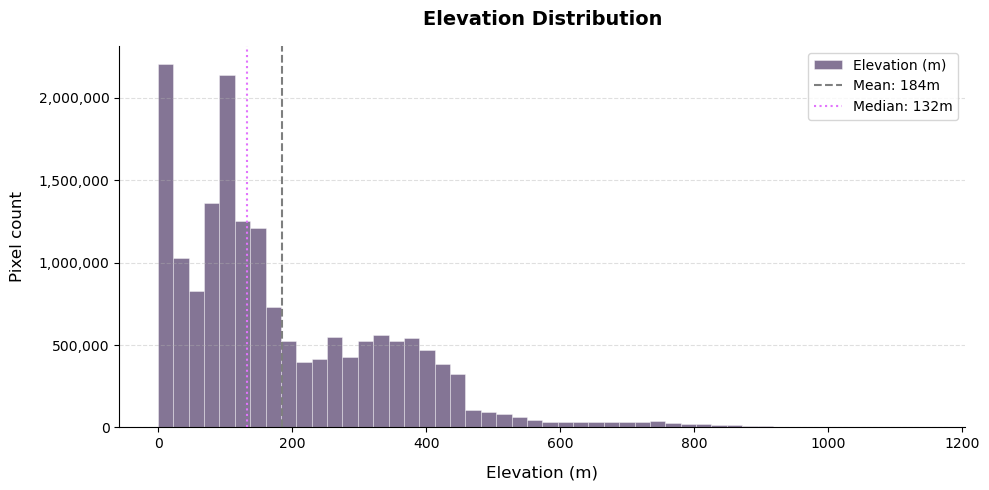

import pystac_client
STAC_ROOT = "https://datacube.services.geo.ca/stac/api"
catalog = pystac_client.Client.open(STAC_ROOT)Production-Ready Terrain Analysis at Scale: A Cloud-Native Geospatial Workflow with STAC and Xarray
By Aycha Tammour
I was recently working on a project for a LiDAR course I was taking that required acquiring Digital Elevation Model (DEM) data for an area in the Halifax region in Nova Scotia, Canada. Now, luckily Nova Scotia has a very good open data portal (geonova.ca) that provides access to a wide variety of geospatial datasets, including DEMs. However, the traditional approach included downloading large raster files and managing them locally (mosaicing multiple tiles and clipping them to the area of interest). But as a data scientist, I automatically think about turning such an exercise into a process: how can I explore this dataet in a more efficient, streamlined workflow that allow me to query and analyze the data without the overhead of downloading and managing large files.
Modern geospatial workflows are shifting away from downloading massive datasets toward querying data directly from the cloud. In this article/tutorial, I walk through how to go from raw elevation data to terrain insights in a reproduciable fashion without downloading a single file manually.
I will use a real-world workflow to:
- Query elevation data using STAC (Canadian DEM data via the Open Data Cube STAC API)
- Load it efficiently into Python using
odc.stac,Daskandxarray - Derive terrain features like slope, aspect and hillshade using
xarray-spatial - Visualize everything interactively with
hvplotandplotly
This workflow is not just limited to this dataset. I have used it in other projects with other datasets such as Sentinel-2 for geospatial machine learning projects.
From Bulk Downloads to Cloud-Native Workflows
Traditionally, working with DEMs (Digital Elevation Models) meant:
- Downloading large raster files and managing storage and file formats
- Clipping or mosaicing multiple tiles to match the area of interest
- Writing custom preprocessing pipelines
Worth noting that this workflow also applies to other types of geospatial data, such as satellite imagery, where you might have to deal with multiple bands and large file sizes. I will follow up with another article to walk through another project in which I build a pipeline to extract time series data from Sentinel-2 and Harmonized Landsat-Sentinel data for a machine learning project.
With STAC and cloud-native tools, we can query only the data we need and stream it directly into our analysis environment. Computation scales effortlessly thanks to lazy evaluation with Dask.
Tools used:
| Library | Purpose |
|---|---|
pystac-client |
Query STAC APIs |
odc-stac |
Load STAC items into xarray |
dask |
Parallel computing and lazy evaluation |
xarray |
Labeled multi-dimensional arrays |
xarray-spatial |
Terrain derivatives (slope, hillshade) |
hvplot |
Interactive visualization |
plotly |
Interactive maps |
Understanding STAC
STAC (SpatioTemporal Asset Catalog) is an open specification for describing geospatial data in a standardized way. It allows data providers to publish datasets with rich metadata, making it easy to discover and access geospatial assets. A STAC API is a web service implementing this specification, allowing users to query and retrieve metadata and assets from a catalog.
STAC organizes data into three levels:
- Catalog: top-level container for collections (or other catalogs)
- Collection: a group of related items (e.g. a DEM dataset)
- Item: a single geospatial asset (e.g. a raster tile) with its metadata
So, how do we get the data?
Connect to the STAC Catalog
For this particular example, I want to use data from Canada’s public STAC endpoint hosted by geo.ca. This endpoint provides access to a variety of geospatial datasets, including the Canadian Digital Elevation Model (CDEM). To connect to this STAC API, we can use the pystac-client library, which provides a convenient interface for querying STAC catalogs.
Let’s inspect what datasets are available in this catalog:
import pandas as pd
pd.set_option("display.max_colwidth", None)
collections = catalog.collection_search().collection_list()
print(f"Number of collections in the catalog: {len(collections)}")
collections_df = pd.DataFrame(
[
{
"id": c.id,
"title": c.title,
"description": (c.description or "")[:120],
"license": c.license,
"spatial_extent": (
c.extent.to_dict().get("spatial", {}).get("bbox", [None])[0]
if c.extent else None
),
"temporal_extent": (
c.extent.to_dict().get("temporal", {}).get("interval", [None])[0]
if c.extent else None
),
}
for c in collections
]
)
Number of collections in the catalog: 46Let us see if we can find the DEM dataset in this catalog. We can filter the collections based on keywords in their description or title to find relevant datasets. In this case, we are looking for collections that mention “DEM” (Digital Elevation Model).
collections_df[collections_df['description'].str.contains('DEM', case=False, na=False)]| id | title | description | license | spatial_extent | temporal_extent | |
|---|---|---|---|---|---|---|
| 17 | hrdem-arcticdem | Mosaic of High Resolution Digital Elevation Model for the Canadian Arctic region / Mosaïque de Modèle numérique d'élévation de haute résolution pour la région de l'Arctique Canadien | High-Resolution Digital Elevation Model (HRDEM) generated from optical stereo imagery. This data collection includes a D | OGL-Canada-2.0 | [-150.95787235250268, 53.425250098087716, -50.532847746518605, 85.14347264884341] | [2017-03-26T12:00:00Z, 2021-11-04T12:00:00Z] |
| 27 | hrdem-mosaic-1m | Mosaic of High Resolution Digital Elevation Model (HRDEM) at 1m / Mosaïque de Modèle numérique d'élévation de haute résolution (MNEHR) à 1m | The High Resolution Digital Elevation Model (HRDEM) Mosaic represents the current and continous coverage of high-resolut | OGL-Canada-2.0 | [-150.95787235250268, 38.500123, -50.76054386118309, 73.975283] | [2018-08-10T12:00:00Z, 2024-11-09T12:00:00Z] |
| 29 | hrdem-mosaic-2m | Mosaic of High Resolution Digital Elevation Model (HRDEM) at 2m / Mosaïque de Modèle numérique d'élévation de haute résolution (MNEHR) à 2m | The High Resolution Digital Elevation Model (HRDEM) Mosaic represents the current and continous coverage of high-resolut | OGL-Canada-2.0 | [-150.95787235250268, 38.500123, -50.532847746518605, 85.159132] | [2017-04-14T12:00:00Z, 2024-11-09T12:00:00Z] |
| 39 | hrdem-lidar | Mosaic of High Resolution Digital Elevation Model (HRDEM) by LiDAR acquisition project / Mosaïque de Modèle numérique d'élévation de haute résolution (MNEHR) par project d'acquisition LiDAR | High-Resolution Digital Elevation Model (HRDEM) generated from LiDAR. This data collection includes a Digital Terrain Mo | OGL-Canada-2.0 | [-141.19215209619085, 41.2427923847184, -51.08012550640729, 69.57135820979204] | [2005-01-01T12:00:00Z, 2024-11-09T12:00:00Z] |
| 41 | mrdem-30 | Medium resolution digital elevation model - 30 meters (MRDEM-30) / Modèle numérique d'élévation à moyenne résolution - 30 mètres (MNEMR-30) | Medium resolution digital elevation model - 30 meters (MRDEM-30). / Modèle numérique d'élévation à moyenne résolution - | OGL-Canada-2.0 | [-178.634083456441, 33.63960835766788, -8.498079497441832, 85.14750471001705] | [2024-06-13T12:00:00Z, 2026-01-21T12:00:00Z] |
Let’s say we are working on a project that requires high-resolution elevation data from the Canadian Arctic region. We can use the hrdem-arcticdem collection, which contains high-resolution Digital Surface Models (DSMs) derived from optical stereo imagery across the Canadian Arctic between 2017 and 2021 (released under the Open Government Licence – Canada).
We can browse the collection here: STAC Browser – hrdem-arcticdem
COLLECTION_ID = "hrdem-arcticdem"
collections_df[collections_df["id"] == COLLECTION_ID].T| 17 | |
|---|---|
| id | hrdem-arcticdem |
| title | Mosaic of High Resolution Digital Elevation Model for the Canadian Arctic region / Mosaïque de Modèle numérique d'élévation de haute résolution pour la région de l'Arctique Canadien |
| description | High-Resolution Digital Elevation Model (HRDEM) generated from optical stereo imagery. This data collection includes a D |
| license | OGL-Canada-2.0 |
| spatial_extent | [-150.95787235250268, 53.425250098087716, -50.532847746518605, 85.14347264884341] |
| temporal_extent | [2017-03-26T12:00:00Z, 2021-11-04T12:00:00Z] |
Visualize Collection Extent
Before querying items, let’s plot the spatial extent of the collection to get a better understanding of its coverage. Please find the script to visualize the collection extent here
from dem_plots import plot_collection_extent
plot_collection_extent(COLLECTION_ID, collections_df)from IPython.display import IFrame
IFrame("hrdem-arcticdem_extent.html", width="100%", height=800)Query STAC Items
Now let’s search the collection for all available items. Each item represents a single raster tile with its own metadata and asset links.
import odc.stac
import numpy as np
from shapely.geometry import shape
search = catalog.search(collections=COLLECTION_ID)
items = search.item_collection()
print(f"Found {len(items)} items in '{COLLECTION_ID}'")Found 36 items in 'hrdem-arcticdem'# Build a GeoDataFrame of item footprints
import geopandas as gpd
items_gdf = gpd.GeoDataFrame(
{
"item_id": [item.id for item in items],
"datetime": [item.datetime for item in items],
},
geometry=[shape(item.geometry) for item in items],
crs="EPSG:4326",
)Let’s visualize all item footprints on an interactive satellite map. We’ll also highlight a specific area of interest (AOI) with a red bounding box. This AOI spans two tiles, which means if i am downloading the data manually, I would have to download both tiles (arcticdem-6_8 and arcticdem-7_8), mosaic them together and crop the AOI. Together this is over 250 GB of data. I will show that with this workflow, we can query and analyze the data without worrying about file management.
The script for plot below can be found here
import geopandas as gpd
from shapely.geometry import box
# Define area of interest as [minx, miny, maxx, maxy]
EXTENT= [-78.926, 73.488, -78.475, 73.680]
bbox_gpd = gpd.GeoDataFrame([box(*EXTENT)],
columns=["geometry"],
crs="EPSG:4326")
# project to EPSG:3979 NAD83 / Canada Atlas Lambert
area_km2 = bbox_gpd.to_crs(epsg=3979).area.iloc[0] / 1e6
print(f"AOI area: {area_km2:,.3f} km²")AOI area: 295.540 km²from dem_plots import plot_stac_boundaries
plot_stac_boundaries(
items_gdf,
collection_id=COLLECTION_ID,
center_lat=73.6,
center_lon=-78.7,
zoom=6,
bbox=EXTENT,
)IFrame("hrdem-arcticdem_items_boundaries.html", width="100%", height=800)Loading Elevation Data with odc.stac and Xarray
We define our area of interest and load the DEM data directly into an xarray Dataset using Open Data Cube’s odc.stac.
The odc.stac.load function allows us to load data from STAC items directly into an xarray Dataset. It handles the complexities of reading data from cloud storage, chunking it for efficient processing with Dask, and aligning it spatially based on the metadata in the STAC items.
This way of “lazy loading” allows us to work with the data in-memory without downloading files. It leverages Dask to handle large datasets efficiently by chunking and streaming data from the cloud. The last step compute() triggers the actual data loading and processing.
Lazy Loading: Working with Large Raster Data Efficiently
odc.stac.load integrates with Dask to load data lazily -meaning no computation happens immediately. The data is:
- Chunked into smaller blocks for parallel processing
- Streamed from the cloud, not downloaded in full
- Executed only when needed, triggered by
.compute()
This makes it practical to work with large DEMs on a standard laptop.
For our relatively small AOI from the arcticdem collection which covers two tiles from the collection, if you were to go to the STAC browser, you can see that downloading the two files would be over 270 GB in size which might not be a problem for some, but for others it might be a barrier to entry. This can also be a problem if you want to work with a larger area that covers even more tiles, or if you want to iterate quickly on different areas without the overhead of downloading and managing files (which is a common scenario in data science and machine learning workflows).
With this approach, we can load and analyze the data without worrying about storage or download times. Only the portion of the data that we need for our analysis will be loaded into memory when we call .compute(), and Dask will handle the rest efficiently in the background.
search = catalog.search(
collections=COLLECTION_ID,
bbox=EXTENT
)
items = search.item_collection()
print(f"Found {len(items)} items in AOI: {EXTENT}")Found 2 items in AOI: [-78.926, 73.488, -78.475, 73.68]items[0].properties{'created': '2024-03-26T13:51:36Z',
'updated': '2025-11-25T19:19:04.433698Z',
'datetime': '2021-05-16T12:00:00Z',
'proj:epsg': 3979,
'collection': 'hrdem-arcticdem',
'proj:shape': [250000, 250000],
'proj:geometry': {'type': 'Polygon',
'coordinates': [[[500000.0, 2500000.0],
[500000.0, 3000000.0],
[0.0, 3000000.0],
[0.0, 2500000.0],
[500000.0, 2500000.0]]]},
'proj:transform': [0.0, 2.0, 0.0, 3000000.0, 0.0, -2.0]}items[0].assets.keys()dict_keys(['dsm', 'extent', 'dsm-vrt', 'coverage', 'thumbnail'])# Load the AOI data into an xarray dataset using odc.stac
from odc.geo.geobox import GeoBox
proj_extent = bbox_gpd.to_crs(epsg=3979).geometry.total_bounds
print(f"Projected AOI bounds (EPSG:3979): {proj_extent}")
geobox = GeoBox.from_bbox(
proj_extent,
crs="EPSG:3979",
resolution=5 # <- downsample to 5m resolution (original is 2m)
)Projected AOI bounds (EPSG:3979): [ 491415.21847392 2730754.87342551 510314.82285658 2754711.24455041]# Load the data with odc.stac.load, specifying the geobox and chunking for Dask
ds = odc.stac.load(
items,
bands=["dsm"], # <- specify the DSM layer only to avoid loading unnecessary data
geobox=geobox,
groupby="solar_day",
chunks={"x": 1000, "y": 1000}, # <- adjust chunk size based on your system's memory and performance needs
)
ds<xarray.Dataset> Size: 73MB
Dimensions: (y: 4793, x: 3780, time: 1)
Coordinates:
* y (y) float64 38kB 2.755e+06 2.755e+06 ... 2.731e+06 2.731e+06
* x (x) float64 30kB 4.914e+05 4.914e+05 ... 5.103e+05 5.103e+05
* time (time) datetime64[us] 8B 2021-05-16T12:00:00
spatial_ref int32 4B 3979
Data variables:
dsm (time, y, x) float32 72MB dask.array<chunksize=(1, 1000, 1000), meta=np.ndarray>import rioxarray
ds.rio.crsCRS.from_wkt('PROJCS["NAD83(CSRS) / Canada Atlas Lambert",GEOGCS["NAD83(CSRS)",DATUM["NAD83_Canadian_Spatial_Reference_System",SPHEROID["GRS 1980",6378137,298.257222101]],PRIMEM["Greenwich",0],UNIT["degree",0.0174532925199433,AUTHORITY["EPSG","9122"]],AUTHORITY["EPSG","4617"]],PROJECTION["Lambert_Conformal_Conic_2SP"],PARAMETER["latitude_of_origin",49],PARAMETER["central_meridian",-95],PARAMETER["standard_parallel_1",49],PARAMETER["standard_parallel_2",77],PARAMETER["false_easting",0],PARAMETER["false_northing",0],UNIT["metre",1],AXIS["Easting",EAST],AXIS["Northing",NORTH],AUTHORITY["EPSG","3979"]]')The dataset has dimensions (time, y, x) and includes:
dsm— Digital Surface Model (includes vegetation and buildings)
Other Canadian DEM collections, such as Medium resolution digital elevation model - 30 meters (MRDEM-30), may additionally include a Digital Terrain Model (DTM) representing the bare ground elevation, which can be used to compute a Canopy Height Model (CHM) by subtracting the DTM from the DSM. Some collections may also include pre-computed hillshade products. We will look at an example of computing the CHM later in the article.
The data variables are backed by Dask arrays and will not be computed until explicitly requested.
Extract and Inspect Elevation
This particular dataset has only one time step so we don’t have to worry about this here, but for other datasets you may find that there are multiple time steps. In such cases, you could select one of the time steps (e.g., the first one) or choose to compute an aggregate (e.g., mean or median) across time before triggering computation to bring the elevation data into memory.
%%time
# This step loads the DSM data into memory
elevation = ds.dsm.mean(dim="time", skipna=True).compute()CPU times: total: 22.1 s
Wall time: 8.14 sLet’s take a look at the elevation data we just loaded:
import numpy as np
print("Type:", type(elevation))
print("Dims:", elevation.dims)
print("Shape:", elevation.shape)
print("Dtype:", elevation.dtype)
print("CRS:", getattr(elevation, "rio", None).crs if hasattr(elevation, "rio") else "N/A")
nulls = int(elevation.isnull().sum().item())
valid = int(elevation.size - nulls)
print("Null cells:", f"{nulls:,}")
print("Valid cells:", f"{valid:,}")
print("Min:", float(elevation.min(skipna=True).item()))
print("Max:", float(elevation.max(skipna=True).item()))
print("Mean:", float(elevation.mean(skipna=True).item()))
print("Std:", float(elevation.std(skipna=True).item()))
print("Memory (MB):", round(elevation.nbytes / (1024**2), 2))Type: <class 'xarray.core.dataarray.DataArray'>
Dims: ('y', 'x')
Shape: (4793, 3780)
Dtype: float32
CRS: EPSG:3979
Null cells: 911,239
Valid cells: 17,206,301
Min: -0.772672176361084
Max: 1147.308349609375
Mean: 184.20950317382812
Std: 160.2916259765625
Memory (MB): 69.11import pandas as pd
import matplotlib.pyplot as plt
elev_series = pd.Series(
elevation.values.ravel(),
name="Elevation (m)"
).dropna()
import matplotlib.pyplot as plt
import matplotlib.ticker as mticker
import numpy as np
fig, ax = plt.subplots(figsize=(10, 5))
# Plot histogram
elev_series.plot.hist(
bins=50,
ax=ax,
color="#503B68",
edgecolor="white",
linewidth=0.4,
alpha=0.7,
)
# Add a vertical line for mean and median
mean_elev = float(elev_series.mean())
median_elev = float(elev_series.median())
ax.axvline(mean_elev, color="#7E7F7F", linestyle="--", linewidth=1.5, label=f"Mean: {mean_elev:.0f}m")
ax.axvline(median_elev, color="#E273FD", linestyle=":", linewidth=1.5, label=f"Median: {median_elev:.0f}m")
# Styling
ax.set_xlabel("Elevation (m)", fontsize=12, labelpad=10)
ax.set_ylabel("Pixel count", fontsize=12, labelpad=10)
ax.set_title("Elevation Distribution", fontsize=14, fontweight="bold", pad=15)
ax.yaxis.set_major_formatter(mticker.FuncFormatter(lambda x, _: f"{int(x):,}"))
ax.spines[["top", "right"]].set_visible(False)
ax.legend(fontsize=10)
ax.grid(axis="y", linestyle="--", alpha=0.4)
plt.tight_layout()
plt.show()
Deriving Terrain Features (Slope, Hillshade, and More)
from xrspatial import slope, aspect, hillshade
slope = slope(elevation)
aspect = aspect(elevation)
hillshade = hillshade(elevation)If you need to save the elevation data (or any derived products) to a file, you can do so using rasterio or xarray’s built-in I/O capabilities. For example, to save the elevation data as a Cloud Optimized GeoTIFF (COG), you can use the following code:
elevation.rio.write_crs("EPSG:3979").rio.to_raster(
"elevation_cog.tif",
driver="COG",
compress="deflate",
)Visualizing Terrain Data
Let’s now visualize the elevation data and the other terrain derivatives we just computed. We can use hvplot for interactive visualization directly from the xarray Dataset. This allows us to explore the data without needing to export it to a file first.
aspect_plot = aspect.hvplot.image(geo=True,
tiles="ESRI",
alpha=0.8,
cmap= "twilight",
title='Aspect (degrees)',
frame_width=500,
frame_height=500)
hillshade_plot = hillshade.hvplot.image(geo=True,
tiles="ESRI",
alpha=0.6,
cmap= "gray",
title='Hillshade',
frame_width=500,
frame_height=500)
shaded_relief = aspect_plot * hillshade_plot
shaded_relief.opts(title="Shaded Relief (Aspect x Hillshade)")
hvplot.save(shaded_relief, "shaded_relief.html")
IFrame("shaded_relief.html", width="100%", height=600)Another Example: Canopy Height Model (CHM)
If we have both the DSM and DTM bands available, we can compute the Canopy Height Model (CHM) by simply subtracting the DTM from the DSM. This gives us the height of vegetation and structures above the ground level. The CHM can be useful for various applications, such as forestry, urban planning, and habitat analysis.
I put together a script get_dem that encapsulates the entire workflow of querying the STAC API, loading the data, and computing terrain derivatives. This function takes parameters for the collection name, bounding box, coordinate reference system, resolution, bands to load, and an optional date range. It returns the elevation data along with derived products like slope, aspect, hillshade, and canopy height model (if both DSM and DTM are available). Feel free to check it out and use it as a starting point for your own projects!
Let’s check out the CHM values for an AOI in Quebec south of Mont Albert:
%%time
from get_dem import get_dem
qu_extent = [-66.2695, 48.327, -65.3796, 48.6402]
qu_elevation, qu_slope, qu_aspect, qu_hillshade, qu_chm = get_dem(collection="mrdem-30",
bbox=qu_extent,
crs="EPSG:3979",
daterange=None,
bands=['dsm', 'dtm'],
resolution=30)Found 1 items in AOI: [-66.2695, 48.327, -65.3796, 48.6402]
AOI area: 2,300.44 km²
Projected AOI bounds (EPSG:3979): [2048978.98811277 399347.57777938 2123536.28274374 459825.38488365]
CPU times: total: 7.14 s
Wall time: 5.5 sLet’s look at the CHM:
chm_plot = qu_chm.hvplot.image(geo=True,
tiles="ESRI",
alpha=0.8,
cmap= "GnBu",
title='Canopy Height Model (m)',
frame_width=600,
frame_height=600)
hvplot.save(chm_plot, "qu_chm.html")
IFrame("qu_chm.html", width="100%", height=600)Summary
This workflow demonstrates that working with large geospatial datasets does not require downloading them. By combining STAC, ODC, and Xarray, we queried, loaded, and processed over 270GB of elevation data while transferring only the pixels we actually needed -a fundamental shift from traditional GIS workflows. The key design principle is compute-near-data: rather than downloading and preprocessing locally, we push computation as close to the source as possible. This minimizes data transfer, eliminates complex preprocessing pipelines, and allows us to leverage cloud resources efficiently (you may see this referred to more broadly as cloud-native computing).
The result is a pipeline that is:
- Scalable: Dask handles datasets that do not fit in memory
- Reproducible: the entire workflow runs from a bounding box and a collection name
- Cloud-native: no local storage, no manual tile management
The terrain derivatives we computed (slope, hillshade, aspect) are more than visualizations. They are foundational in GIS, remote sensing, and environmental analysis, and are increasingly used as ready-to-use features for downstream geospatial ML models, from land cover classification and flood risk prediction to wildlife habitat mapping. This workflow can also be extended to other STAC-enabled datasets such as Sentinel-2 or Landsat, enabling scalable feature engineering for broader geospatial ML pipelines.
In future posts, I will dive deeper into how these features can be integrated into ML pipelines using a similar cloud-native approach.
References
- pystac-client documentation
- odc-stac documentation
- xarray-spatial documentation
- geo.ca STAC catalog
- hrdem-arcticdem collection
- mrdem-30 collection
from datetime import datetime
from IPython.display import Markdown
Markdown(f"*Last updated: {datetime.now().strftime('%B %d, %Y')}*")Last updated: May 04, 2026